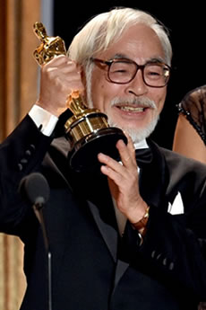
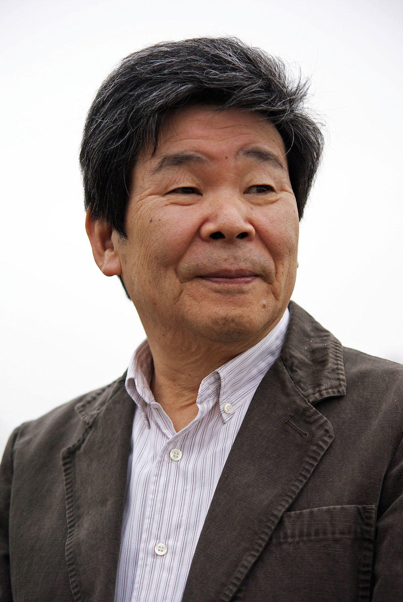

ジブリについて
スタジオジブリとは
スタジオジブリは、1985年に宮崎駿と高畑勲によって設立された日本のアニメ制作会社で、手描きアニメーションを中心に独自の世界観と深いテーマ性を持つ作品を生み出してきた。「ジブリ」という名前はサハラ砂漠の熱風に由来し、「アニメ界に新しい風を吹き込む」という想いが込められている。テレビシリーズではなく、劇場用のオリジナル長編作品にこだわり、芸術性と商業性を両立させる姿勢が特徴。


代表作
- となりのトトロ（1988年）
ジブリの象徴的存在。子どもたちと不思議な生き物トトロとの交流を描いた心温まる物語
- 千と千尋の神隠し（2001年）
少女・千尋が不思議な世界で成長していく冒険譚。アカデミー賞長編アニメ賞を受賞
- もののけ姫（1997年）
自然と人間の共存をテーマにした壮大なファンタジー。深いメッセージ性が話題に
- 天空の城ラピュタ（1986年）
空に浮かぶ伝説の城をめぐる冒険。少年少女の絆とロマンが詰まった名作
- 魔女の宅急便（1989年）
空に浮かぶ伝説の城をめぐる冒険。少年少女の絆とロマンが詰まった名作
背景画像引用元